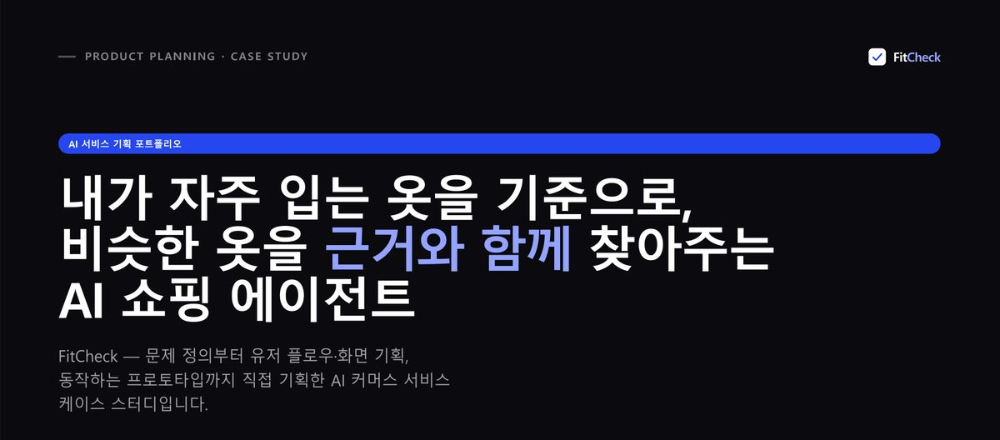
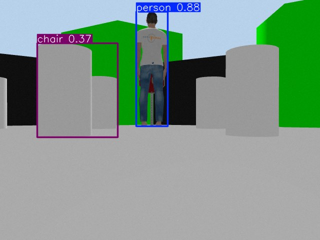
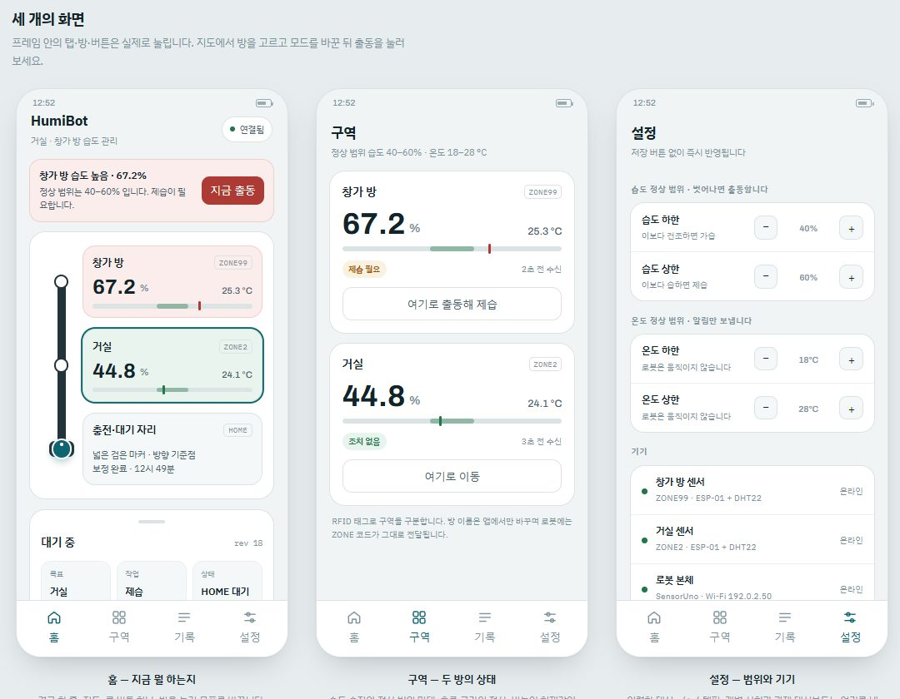

목표와 구조를 먼저 정합니다
무엇을 만들지, 어떤 부분으로 나눌지, 각 부분이 무엇을 맡을지 정한 뒤 구현을 맡깁니다.
Claude Code와 Codex 같은 AI 코딩 에이전트로 프로젝트를 만듭니다. 대신 AI가 "됐다"고 하는 것과 실제로 되는 것은 다르다는 걸 기준으로 삼습니다.
무엇을 만들지, 어떤 부분으로 나눌지, 각 부분이 무엇을 맡을지 정한 뒤 구현을 맡깁니다.
구현은 주로 Claude Code와 Codex가 하고, 필요하면 두 에이전트가 서로의 결과를 검토하게 합니다.
테스트와 실제 실행으로 확인하고, 확인하지 못한 기능은 README에 미검증으로 따로 적습니다.
프로젝트와 수업에서 써 본 기술입니다. 숙련도 대신, 어디에 썼는지를 아래 프로젝트에 적었습니다.
GitHub에 공개한 프로젝트 4개입니다. 프로젝트마다 제가 맡은 부분과, 확인한 것·확인하지 못한 것을 나눠 적었습니다.
좋아하는 옷과 비슷한 옷을 찾아 근거와 함께 비교하는 AI 쇼핑 에이전트
에이전트가 웹 검색 → 상세페이지 수집 → 사이즈표 OCR → 스펙 정리 → 매칭 점수 계산을 도구로 수행해, 근거가 붙은 후보 목록을 만듭니다.

AI 시대 신입 개발자를 위한 실무 시뮬레이터
가상 스타트업에서 4주 수습을 보냅니다. 버그가 심어진 실제 git 레포에 PR을 올리면 AI 동료들이 메신저와 코드 리뷰로 반응하고, CI·숨은 QA 테스트·장애가 실제로 돌아갑니다.

A*로 경로를 짜서 주행하다, 사람이 보이면 멈추는 TurtleBot3
ROS 2에서 지도 기반 A* 경로 계획과 Pure Pursuit 주행, YOLO 사람 검출 정지를 하나로 묶었습니다. 사람이 사라져도 정지를 유지하고, 수동 해제와 새 목적지가 있어야 다시 움직입니다.

습도가 가장 많이 벗어난 구역을 찾아가 가습·제습하는 이동형 로봇
구역 센서 2개가 Wi-Fi로 온·습도를 보내면 Python 서버가 MySQL에 저장하고 우선순위를 계산합니다. 로봇은 Arduino Uno 3대(센서·모터·액추에이터)와 ESP-01로 역할을 나눴습니다.

미래융합교육원
ROS 2, 자율주행 로봇 설계·구현, 센서 융합을 실습 위주로 배우고 있습니다. my-car-astar와 구르미가 이 과정에서 나왔습니다.
3학년 편입
머신러닝, 자연어처리, 컴퓨터비전, 음성인식, 인공지능시스템을 이수했습니다. 캡스톤 디자인으로 「RAG를 활용한 주도적 언어모델의 개발과 활용방안」(2인 팀)을 진행해, 언어모델 파인튜닝에 RAG와 음성인식(STT)을 붙였습니다.
프로젝트에 대한 질문이나 면접 제안 모두 환영합니다.